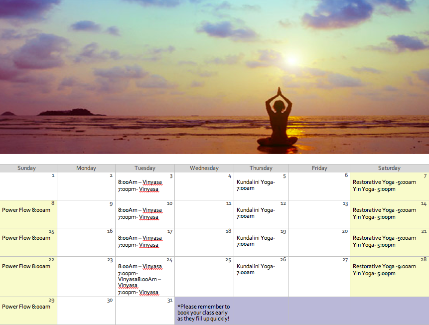

I started doing yoga about 4 years ago. A few years into yoga I had a wrist injury (from other causes). The doctors told me I would never practice yoga again. I became really depressed and felt hopeless. Fitness was my passion and it appeared I would never be able to pursue it to its full potential. I started practicing yoga with hopes I would eventually be able to use my wrist again. With proper training and continual practice I am happy to say I have complete use of my wrist again! This was my jumpstart to yogaYoga has not only changed my physical side but it has helped me to connect with myself on a much deeper level. Every day when I show up to my mat is the best part of my day! Yoga has become my passion and now I want to share that with the world. I have practiced all forms of yoga including; hatha, vinyasa, ashtanga, retorative, and kundalini. I love doing inversions, and any pose that challenges me. My hobbies outside of yoga include traveling, hiking, scuba diving, and adventure sports. Most importantly I enjoy sharing her passion for yoga with others
Yoga With Brie offers classes appropriate for all levels. Whether you prefer a more intensive class, or a more calming restorative class we have options for you. All classes will be hed in Turo Parc where you can enjoy your yoga flow while enjoying nature in the heart of Barcelona. All classes are 5 euros. Brie loves sharing yoga with everyone so she welcomes you to bring a friend once a month for free! To regester for the classes please contact Brie directly at Brie.Fritsch@gmail.com. There is a limit of 15 persons per class. What are you waiting for? Sign up today, spots fill up fast!
